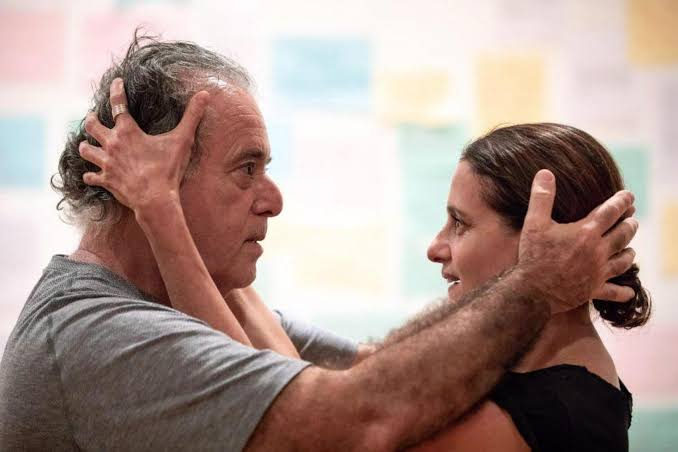

JUNTOS SABEMOS MAIS.

O que me aproxima de cada uma das pessoas que perdem alguns minutos de suas vidas para lerem os meus textos, há mais de 50 anos?
Somos humanos. Essa é a resposta. Sofremos as mesmas dores, amamos, odiamos, mentimos, lutamos todos os dias em busca de alguma coisa que nos distancia de quem deveríamos de fato ser. Somos mais simples do que pretendemos e mais complexos do que percebemos. Algumas dessas coisas nós sabemos. Outras não. Algumas delas percebemos quando estamos juntos e outras quando nos distanciamos – e a isso chamamos de saudade. Talvez este seja o sentido mais humanitário do teatro: aproximar pessoas que talvez nunca estivessem juntas num mesmo espaço, ao mesmo tempo.
Após assistir a O Que Só Sabemos Juntos, saí do TUCA preenchido por minha própria humanidade. Denise Fraga e Luiz Villaça encontraram uma forma de construir dramaturgia (e, portanto, teatro) alinhada com os nossos dias tão cheios de histórias. Essa busca não é nova. Já em seu famoso quadro Retrato Falado, apresentado no Fantástico (Rede Globo) há alguns bons anos, a atriz investigava e dramatizava histórias comuns transformando-as em pequenas joias de teledramaturgia. Às vezes dava muito certo. Outras, nem tanto. Mas era sempre novo e gerava expectativa.
Esta prática de investigar as humanidades presentes e devolvê-las à cena chega ao palco no espetáculo Eu de Você e ganha um formato ainda mais teatral em O Que Só Sabemos Juntos. Há surpresas que não me atrevo a revelar, delicadezas que o público vai percebendo aos poucos desde que as portas do teatro se abrem. Um jogo se estabelece sobre quem é público e quem é plateia, é teatro ou é a casa da gente? As pessoas presentes são provocadas, e logo em seguida, suas falas são incorporadas à cena como referências e ‘cor local’ para servir a um roteiro pré-definido criado a partir também de provocações feitas entre criadores e criaturas desde os ensaios — num espaço cênico em que não importam mais as algemas antiquadas que, há muito, rotulamos como ‘personagens’.
O espaço é tablado, casa, campo de futebol, pista de dança, ringue para todas as batalhas humanas. É representação, interpretação, jogo. E por jogo, é preciso que me entendam, trato de coisas muito sérias. Estão ali, sobre aquele palco, conceitos ancestrais da arte do teatro. A mímese e a verossimilhança apontadas por Aristóteles, as máscaras da Commedia dell’Arte, a fé cênica e os círculos de atenção mencionados por Stanislavski, o distanciamento de Brecht, o jogo proposto por Viola Spolin e Augusto Boal. Tudo orquestrado pelo olhar atento e provocador de Luiz Villaça.
São tantas camadas em cena que se sobrepõem e se alternam de forma que o jeito primeiro de se fazer teatro aparece com profundidade e simplicidade simultâneas, se é que este paradoxo seja possível. Me refiro ao jogo teatral. Jogo. Essa palavra tão vilipendiada na língua portuguesa destes nossos tempos de games. Jogo, jogar, jogador, jogatina. Na vida adulta essas palavras ganham um peso vil. E não deveria ser assim. Deveríamos continuar ao longo da vida experimentando o prazer infantil do jogo ou, por outra, da brincadeira.
Parece simples, mas no fundo não é. A essa aparente brincadeira somam-se as vozes e as palavras que remontam 4 mil anos de teatro. Ouvimos os pensamentos de Anton Tchekhov, Bertolt Brecht, Olga Tokarczuk, Dorrit Harazim, Simone de Beauvoir, Annie Ernaux, Fernando Pessoa, Wislawa Zymborska, Arnaldo Antunes, João Cabral de Melo Neto, entre muitos, muitos outros. Todos falados com imensa espontaneidade por um par de performers-cumplices-jogadores de enorme excelência.
Ha décadas não via Tony Ramos num palco. Foi um prazer imenso revê-lo celebrando a vida e o futuro, repassando suas memórias, construindo novas memórias fictícias, incorporando todos os homens do mundo. Denise Fraga é um portento. É um pilar, uma rocha, um porto, um terremoto, um vendaval. Uma daquelas manifestações grandiosas da natureza diante das quais vemos o poder da criação em movimento.
Sem pirotecnias, sem grandes surpresas tecnológicas ou futilidades visuais, todo o conjunto da obra caminha para que encontremos o personagem mais importante daquele encontro: nós mesmos. A cenografia da arquiteta Duda Arruk soma-se à luz de Wagner Antônio para construir um espaço cênico caloroso e reconfortante apesar de uma aparente e momentânea aridez. Embora aberto – o que sugere o infinito –, o palco está preenchido apenas por uma área de representação neutra na qual podemos plasmar nossas próprias visões de mundo, como quadro a ser pintado. Em branco. Uma folha de papel em branco, uma tela de cinema antes do filme começar. E, claro, cadeiras. Esse objeto tão misterioso e tão presente em nossas vidas em cada um dos nossos momentos mais solitários. Objeto estão carregados de pessoalidade e memória. Cada dia mais, acredito num teatro feito apenas com cadeiras. Principalmente se forem as certas.
Quem me lê, sabe que gosto de sempre tentar esmiuçar cada elemento da encenação. Falemos, pois, de figurino. Tenho a impressão de que Verônica Julian aponta um caminho de indumentária mais próxima da ideia de figurino quando veste Denise Fraga com um traje com menor cotidianidade. Entretanto, Tony Ramos nos parece saído de um passeio no shopping. Não há erro nisso, apenas dois caminhos possíveis embora me pareçam antagônicos.
A direção musical é de Fernanda Maia – figurinha carimbada do nosso teatro musical nos últimos 20 anos. Toda a encenação é pontuada musicalmente por uma banda feminina, composta por cinco multi-instrumentistas; estratégia que já temos visto em outras montagens na cidade, como em Cabaret no Kit-Kat Club.
Pra terminar, lembro de Denise Fraga citando Simone de Beauvoir. Escrevo por que é preciso, porque eu preciso. Vou ao teatro e continuo falando de teatro porque isso nos aproxima de quem somos e de quem os outros são. Discordo de Sartre (não por acaso companheiro de Simone): o inferno não são os outros. Acredito que o inferno é não percebermos o outro. Falei!